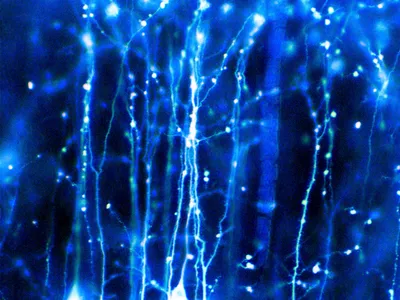

Neuron, basic cell of the nervous system in vertebrates and most invertebrates from the level of the cnidarians (e.g., corals, jellyfish) upward. A typical neuron has a cell body containing a nucleus and two or more long fibres. Impulses are carried along one or more of these fibres, called dendrites, to the cell body; in higher nervous systems, only one fibre, the axon, carries the impulse away from the cell body. Bundles of fibres from neurons are held together by connective tissue and form nerves. Some nerves in large vertebrates are several feet long. A sensory neuron transmits impulses from a receptor, such as those in the eye or ear, to a more central location in the nervous system, such as the spinal cord or brain. A motor neuron transmits impulses from a central area of the nervous system to an effector, such as a muscle.
